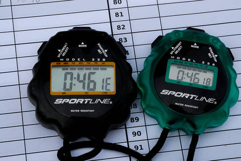

|
2008 Low-Key Hillclimbs Overall Results |
|  |
| Phil Dubach photo |
Thanks to our great volunteers for making this series succeed!
pl # rider team category week1 week2 week3 week4 week6 week7 week8 week9 overall 1 244 Bill Bushnell Low-Key Hybrid 105.29 - --VC- --V-- 100.00 100.00 100.00 100.00 407.06 2 417 Peter Cazalet Webcor/Alto Velo Hybrid 95.21 - - - - - - - 95.21
pl # rider team category week1 week2 week3 week4 week6 week7 week8 week9 overall 1 210 Tim Clark Red Octane 35+ 124.97 124.96 134.00 --V-- 127.60 132.01 138.86 124.89 539.84 2 39 Clark Foy San Jose Bike Club 40+ 127.36 - 132.41 133.66 124.87 127.57 137.07 129.07 532.22 3 97 Greg McQuaid San Jose Bike Club 35+ 123.48 - - --V-- 117.73 123.77 92.58 127.11 499.14 4 1 Dan Connelly Low-Key 3 --V-- 117.28 118.63 --V-- 119.54 88.15R 129.80 124.75 498.78 5 217 Thomas Novikoff Cambio 2 - 121.29 127.77 - 121.09 122.86 - 126.70 498.62 6 352 Geoff Drake Bike Trip 45+ 120.38 121.36 - - 121.51 122.50 - 126.87 492.24 7 54 Justin Lucke Google Vegan 116.45 121.42 124.63 - - - --V-- 120.34 488.52 8 328 Mark Edwards Bike Trip 45+ 115.15 115.40 - - 118.23 119.86 - 123.48 476.96 9 17 Brian Edwards Hell Riders 25-29 120.17 116.42 121.46 - - 115.53 - 118.30 476.36 10 458 Craig Sanders X Men 40+ 115.86 116.18 - 124.60 - 114.74 - - 471.38 11 213 Tom Gardin 35+ - 113.24 119.64 - 112.80 - 120.57 112.37 466.25 12 585 Michael Barnes - 111.37 115.44 119.25 114.00 112.42 --V-- 106.58W 464.91 13 20 James Porter Western Wheelers Out Of Shape Dads 108.73 --V-- 111.67 116.81 109.71 110.48 - 115.32 458.40 14 142 Rich Hill LGBRC 40+ 108.90 111.09 --VC- 114.83 - 110.04 - 115.20 454.84 15 506 Nils Tikkanen Bike Trip 3 109.25 108.93 - - 108.60 110.92 - 98.33WM 437.70 16 124 Jeff Farnsworth San Jose Bike Club 50+ - - 109.69 111.18 - 106.79 - 109.55 437.22 17 343 Matt Werner Bike Trip 45+ 102.28 - - 111.98 106.38 106.39 - 110.51 435.25 18 452 Bruce Gardner Monta Vista Velo 35+ 101.82 102.67 104.49 107.97 94.09 107.62 111.87 104.69 432.15 19 250 Ian Sowden - 106.08 --VC- 112.33 105.34 - - - 431.67 20 67 Martin Hyland Western Wheelers 50+ 107.21 - 106.48 109.38 104.87 --V-- --V-- 105.16 430.77 21 35 Ron Brunner Low-Key Commuter 104.45 106.69 109.05 - - - - 109.75 429.93 22 518 Carmelo Rios Fighting Bobas 5 108.56 103.86 107.37 - 109.62 - - - 429.42 23 532 Ben Stern Roaring Mouse Fixed Gear 100.78 106.54 --VC- --V-- - - - 111.54 425.15 24 273 Calvin Do Skinny slow guys 35+ 97.73 97.21 104.17 103.34 - 102.46 109.37 103.41 420.28 25 307 Christian Paquet Doogie 50+ 101.87 105.18 107.93 - 104.09 102.21 - - 419.40 26 421 Matt Wocasek Bike Trip 4 101.13 - 104.04 110.84 101.16 102.71 - - 418.74 27 323 Scott Martin Bike Trip 50+ 100.73 100.00 - - 101.97 104.26 - 90.55 406.95 28 579 Jonathan Walden - 97.38 99.00 106.80 96.29 96.75 --V-- - 404.24 29 520 Liam Stewart Roaring Mouse 5 99.18 - --VC- 96.70 - - - 99.01W 393.19 30 272 Martin Hampton Pen Velo/Kondra 93.49 91.48 97.95 103.93 - - - 96.69 392.06 31 455 Erik Strom Mud 'n' Crud - 71.30 96.99 99.91 97.43 - - 95.26 389.58 32 140 Gary Griffin Bike Trip 55+ --V-- 96.71 97.44 - 95.96 --V-- - --V-- 388.30 33 236 Paul Melville Doogie 55+ 90.98 93.51 98.36 - 94.03 95.86 - - 381.75 34 34 Stephen Fong Blubber Busters 5 90.66 - 93.26 93.77 - --V-- 93.60 95.42 377.05 35 591 Neal Herman Team Spike - 86.48 89.91 - 89.07 - 96.00 - 361.46 36 73 Barry Burr One Leg to Stand On 45+ --V-- --V-- --V-- 88.35 77.83 78.58 91.64 87.83 359.98 37 337 Bruce Swanson Leafy Joe 45+ - 90.00 89.05 91.25 - 85.17 - - 355.47 38 809 Phil Dubach Western Wheelers 35+ - - 78.45 89.66 --V-- 83.05 90.08 86.83 355.44 39 282 Ammon Skidmore Roaring Mouse 30+ 116.12 119.16 --VC- - - - - - 352.92 40 351 Jeff Swan Team Spike 85.03 83.92 85.55 - 84.55 80.10 89.39 85.22 345.18 41 408 Richard Contreras 81.19 --V-- 84.09 88.85 80.10 - - 82.86 341.07 42 505 Christopher Olson Google - 85.13 - 87.28 82.31 83.30 - 85.32 341.03 43 315 Ken Gallardo Pen Velo/Kondra 30+ 111.61 - 117.46 - - 109.46 - - 338.53 44 336 Ed Noskowski Leafy Joe 45+ 77.91 82.04 79.27 88.49 - 82.07 - - 331.87 45 444 Ernesto Castillo Chain Reaction 30+ 103.97 - 108.63 116.81 - - - - 329.41 46 478 Patrick Callahan Western Wheelers 35+ 77.47 77.80 - 83.77 79.02 77.63 83.03 82.28 328.10 47 479 Jeromy Cottell Pen Velo/Kondra - 106.69 - 112.92 - - - 107.47 327.07 48 615 Bob Corman Team Spike - 78.49 77.87 76.39 76.47 - 83.03 77.26 316.65 49 415 Sam Beal Chain Reaction 105.51 102.95 108.13 - - - - - 316.60 50 800 Michael Ahern LGBRC 40+ - - 73.95 - - 69.82 81.23 85.65 310.65 51 283 Dan Talayco Two Wheel Tango GoatIbex 102.02 - 102.07 103.73 - - - - 307.83 52 457 Robert Palassou Sisters of No Mercy - - - 106.90 - 96.86 102.75 - 306.51 53 349 Dennis Pedersen Bike Trip 45+ - 100.04 - 106.80 98.45 - - - 305.30 54 397 Michael Williams Sisters of No Mercy 35+ - - 99.58 - - 98.70 106.35M - 304.64 55 484 Wolfgang Timm Western Wheelers 40+ 71.85 75.08 - - 70.76 70.35 75.44 82.06 304.43 56 441 Ilyas Elkin Nvidia 25-29 99.14 102.71 97.50 - - - - - 299.35 57 609 Franz Kelsch Utah Velo 60+ - 98.50 102.13 - - - - 95.10 295.73 58 412 John Pollard Bike Trip 45+ 98.80 96.46 - - - 95.09 - - 290.35 59 365 Gino Cetani Western Wheelers 35+ 97.32 - 97.27 - - - - 95.57 290.16 60 621 Paul Woodard Team Spike - 77.75 - 60.86 75.20 72.50 - - 286.31 61 48 David Kelly Team Kelly 30+ - 79.21T --VC- - - - - 110.31 284.28 62 64 Keith Devlin Western Wheelers 60+ 92.15 93.24 - 96.27 - - - - 281.66 63 110 Edward Miller SLACer 65+ - 89.93 91.08 92.18 - - - - 273.19 64 372 Ryan P.C. Gibson Google - 88.02 - - - - 93.74 90.23 271.98 65 810 Alexander Garza Monta Vista Velo 55+ - - 94.58 - - 86.50 - 88.75 269.83 66 804 Marco Palmeri 25-29 - - 100.18 79.18T - - - 85.28T 264.64 67 454 Bob Montague Bike Trip 45+ 95.61 96.75 - - 71.63 - - - 263.98 68 229 Michael Czepiel Apple 20-24 87.25 - 82.59 93.77 - - - - 263.62 69 51 Tracy Colwell Team Colwell 2 - - - - - 132.43 - 129.28 261.71 70 557 Matt Beadon Nvidia 30+ - - - 84.89 86.48 87.68 - - 259.05 71 141 Carl A. Nielson Wells Fargo Racing Team 45+ - - 125.85 - - - 130.33 - 256.17 72 43 Scott Frake Webcor/Alto Velo Bald 123.62 - - - - 127.18 - - 250.80 73 578 Tom Roberts San Jose Bike Club 40+ - - - - - 119.86 - 124.78 244.63 74 456 Yuma Koishi San Jose Bike Club Junior - - - - - 113.03 - 122.02 235.05 75 465 Rune Dahl Western Wheelers 45+ - - - 120.31 - - - 114.71 235.02 76 546 Hector Barron - - - - - 117.16 - 115.80 232.96 77 176 Dave Rossow Webcor/Alto Velo 35+ - - - - - 115.21 - 114.33 229.54 78 278 Chris Heisterkamp Google Male - 111.93 - - - - 115.32 - 227.25 79 284 John Walker Google 40+ - - 112.72 - - 113.33 - - 226.05 80 507 Krishna Dole 30+ - 102.29 - 121.25 - - - - 223.54 81 500 Mike Donahue 40+ 106.66 116.06 - - - - - - 222.72 82 36 Bill Davis Google 4 - - - 114.71 - 106.11 - - 220.82 83 556 Alon Golan Webook.com 4 107.60 106.49 - - - - - - 214.09 84 435 Russ McCrary Sisters of No Mercy 45+ - - - - - - 111.09 102.27 213.36 85 402 Gary Gellin Sisters of No Mercy Runner - - 107.86R - - 105.04R - - 212.90 86 453 Doug Aldrich San Jose Bike Club - 105.83 - - - - - 103.10 208.93 87 335 Jim Langley Bike Trip 50+ - - - - 101.08 106.66 - - 207.74 88 663 Denin Sahovic LGBRC 35+ - - - - --V-- - - 102.85 205.71 89 443 Myles Cowherd 40+ 103.87 - - - - - - 101.27 205.14 90 602 Ramon Ochoa Bike Forums 35+ - - 99.82 104.13 - - - - 203.95 91 806 Ko Ihara Nvidia 25-29 - - 98.59 104.23 - - - - 202.82 92 539 Andy Cedilnik 30+ - - - - - 101.34 - 101.38 202.72 93 406 Gento Kusano San Jose Bike Club Junior - - - - - 103.22 - 97.25 200.47 94 29 Dean Larson Team Dino 40+ - - 103.65 - - 96.41 - - 200.06 95 237 Bill Preucel Sisters of No Mercy 45+ - - 101.95 - - 96.97 - - 198.92 96 480 Arley Lewis Field of Rabbits - 96.25 - - - - 100.08 - 196.33 97 569 Vincent Valvano 50+ - - - - - 96.41 - 99.86 196.27 98 467 Vincent Juarez San Jose Bike Club Junior - - - - - 95.75 - 99.96 195.71 99 380 Fred Butts Low-Key 65+ --V-- - 62.69 - - --V-- - 67.38 195.10 100 535 Tim Dent Roaring Mouse 5 - - - 94.18 - - - 97.06 191.24 101 483 Bryan King Bike Trip 4 - - - - - 97.88 - 91.69 189.58 102 325 Kevin Fetterman Sunburnt DJ - 97.00 - - - - - 91.41 188.41 103 384 Dan Rohrer Leafy Joe - 92.81 - - - 95.53 - - 188.34 104 277 DJ Novotney 30+ - 97.98 - - - - - 89.94 187.92 105 473 Steve Youtskey Dolce Vita 45+ - - - - - - 93.94 93.94 187.89 106 286 William von Kaenel LGBRC 40+ - - - - 92.78 94.77 - - 187.55 107 550 Mike Bradley Fozz 40+ 93.11 94.22 - - - - - - 187.33 108 481 Chris Baker Bike Trip 45+ - - - - 91.51 - - 94.79 186.30 109 346 Joe Farinha San Jose Bike Club 45+ - - - - - 94.66 - 86.97 181.63 110 477 Mike Deitchman Mud 'n' Crud 30+ - - - 89.81 - - - 88.82 178.63 111 469 Mat Davidson RoadBikeReview - 88.19 87.74 - - - - - 175.93 112 801 Kley Cardona ACTC 45+ - - 80.07 - - - - 90.93 171.00 113 464 Eric Sorenson Bike Forums 30+ 83.55 - 80.72 - - - - - 164.27 114 496 Garry Chin Garry 40+ 85.31 - - - - 77.34 - - 162.65 115 231 Murali Krishnan Commuter 35+ 85.13 - - 73.79 - - - - 158.92 116 442 Hal Ramsey - 81.11 - 70.03 - - - - 151.14 117 528 Sean Dawson Roaring Mouse 5 - - - 39.63M - - - 109.04 148.67 118 448 Tim Sutton Plus 3 Network Mountain Bike 69.97 77.03 - - - - - - 147.00 119 49 Adam Tow Blubber Busters Infinity 71.20 - --V-- - - - - - 142.40 120 15 Rich Brunner Cruzie 39ish - - 67.79 72.65 - - - - 140.44 121 808 Allen Erkman Team Scooby Single Speed 64.41 75.82 - - - - - - 140.24 122 364 Chris Isley Webcor/Alto Velo 4 - - - - - - - 128.63 128.63 123 93 Petro Hizalev Webcor/Alto Velo 30+ - - - - - - - 124.89 124.89 124 622 Floyd Long Oakland Southern Expatriot - - - - - - 123.26 - 123.26 125 248 Michael Grundmann Webcor/Alto Velo 3 - 122.02 - - - - - - 122.02 126 62 Daryl Spano San Jose Bike Club 40+ - - 120.76 - - - - - 120.76 127 555 Roland Freund Davis Bike Club 45+ - - - - - - 119.55 - 119.55 128 471 David Nader Pen Velo/Kondra 35+ - - - 118.34 - - - - 118.34 129 581 Colin Brown UCSC College - - - - - - - 117.60 117.60 130 158 Charles Pockell-Wilson Morgan Stanley 40+ - - - - - - - 116.31 116.31 131 576 Jim Bonnet Team Extreme 40+ - - - - - - - 115.15 115.15 132 807 Kelly Heil Leafy Joe 45+ - - 53.98 60.26 - - - - 114.24 133 648 Goeric Daenink 30+ - - - - - - - 113.96 113.96 134 627 Josh Lubransa No Form - 113.87 - - - - - - 113.87 135 603 Mike Attie Bi-Pedal - 113.81 - - - - - - 113.81 136 83 Kieran Sherlock AV: Old Guys Finish Open - - - - - - - 113.19 113.19 137 521 Vladmir Parrales Roaring Mouse 5 - - - 113.15 - - - - 113.15 138 487 Nicholas Webb - 112.66 - - - - - - 112.66 139 536 Andreas Freund Davis Bike Club Junior - - - - - - 112.27 - 112.27 140 37 Bill Lloyd Six Fifty 1 - 111.65 - - - - - - 111.65 141 322 Christopher Bosch Google - 111.54 - - - - - - 111.54 142 812 Ken Mejica Road Divas 30+ - - 111.15 - - - - - 111.15 143 560 Karl Schilling LGBRC 45+ - - - - - 110.33 - - 110.33 144 271 John Toor 50+ - - - - - - - 110.11 110.11 145 687 Laurent Pfertzel 45+ - - - - - - - 110.03 110.03 146 600 Tom Brown Google Bad Veggie - - - - - - 109.66 - 109.66 147 385 Todd Studenicke San Jose Bike Club 109.25 - - - - - - - 109.25 148 543 Wayne Hanson 40+ - - - - - - - 109.23 109.23 149 475 Arturo Galind San Jose Bike Club 40+ - - - - - - - 108.83 108.83 150 633 Paul Barclay Swarm - 108.66 - - - - - - 108.66 151 476 Johannes Smith 30+ 108.45 - - - - - - - 108.45 152 427 Niall Murray Murray 5 108.11 - - - - - - - 108.11 153 290 Mike Schuster Google 40+ - - 107.79 - - - - - 107.79 154 491 Fabio Del Prete Italiano 35+ - - - - - - - 107.40 107.40 155 590 Ode Bernstein Term of Enchantment Positive - - - - - - 107.34 - 107.34 156 424 Joe Fabris Fighting Bobas 45+ - - - - 107.11 - - - 107.11 157 638 Sam Parker Roaring Mouse 30+ - - - - - - - 106.79 106.79 158 523 Jamie Willin Olympic Club - 106.69 - - - - - - 106.69 159 735 Rick Ferrell 50+ - - - - - - - 106.69 106.69 160 162 David Stockwell San Jose Bike Club 50+ - - - - - - - 106.48 106.48 161 88 Peter Tapscott AV: Old Guys Finish 50+ - - - - - - - 105.50 105.50 162 522 Marc Barberis Western Wheelers 40+ - - - - - 105.44 - - 105.44 163 513 Nicholas Hack Roaring Mouse 5 - - - 105.34 - - - - 105.34 164 295 Brian Schmitz Sisters of No Mercy 35+ - - - - - - - 104.14 104.14 165 50 Francis Cebedo RoadBikeReview 5 102.48 - - - - - - - 102.48 166 4 Fred E. Stamm Pen Velo/Kondra 55+ - - - 101.88 - - - - 101.88 167 514 Troy Folkner Western Wheelers 55+ 101.37 - - - - - - - 101.37 168 492 Tim Sawyer Bike Trip 45+ - - - - 100.65 - - - 100.65 169 679 Steve Lloyd 45+ - - - - - - - 100.38 100.38 170 143 QP Lin - - - - 100.36 - - - 100.36 171 409 Alan Weatherall San Jose Bike Club 45+ - - - - - - - 100.29 100.29 172 703 Ed Ceaser Roaring Mouse 20-24 - - - - - - - 100.04 100.04 173 241 Oliver Chan Voler 4 - - - 100.00 - - - - 100.00 173 631 Frank Vegh Webcor/Alto Velo 2πR - - - - - - 100.00 - 100.00 173 490 L Klein Jerry 40+ 100.00 - - - - - - - 100.00 173 461 Larry Bruberg Bike Trip 50+ - - - - 100.00 - - - 100.00 177 280 Patrick Kenny Google - - - - - - 99.45 - 99.45 178 462 Dirk Rohloff Fighting Bobas - 99.38 - - - - - - 99.38 179 636 Andrew Valku Mission cycling 20-24 - - - - - - - 99.27 99.27 180 614 Donald Neloch 50+ - - - - - - - 99.08 99.08 181 433 Jeff Lin Western Wheelers 35+ 98.57 - - - - - - - 98.57 182 383 Mark Hlady Independent - - - - - - - 98.33 98.33 183 501 Oscar Lomeli Bike Trip 50+ - - - - 98.32 - - - 98.32 184 9 Ken Straub Team Bikeaholics Older Than You - - - - - - - 98.29 98.29 185 497 Adam Brinkman - 97.85 - - - - - - 97.85 186 509 Alexander Freund Davis Bike Club Junior - - - - - - 97.85 - 97.85 187 625 Joe Pugliese La Grange 30+ - - - - - - - 97.81 97.81 188 419 Akin Dirik Webcor/Alto Velo 40+ - - - - - - - 96.61 96.61 189 495 Moises Mojica Chain Reaction 35+ - - - 96.01 - - - - 96.01 190 472 James Gillis next week 45+ 96.01 - - - - - - - 96.01 191 673 Martin Klaus Webcor/Alto Velo 35+ - - - - - - - 95.10 95.10 192 222 Mike Salameh 50+ - - - - - - - 94.79 94.79 193 508 Kevin Wong Team Spike 30+ 94.25 - - - - - - - 94.25 194 545 Jeff Vadasz Leafy Joe 40+ - - - 93.93 - - - - 93.93 195 179 Erik Powell 40+ - - - - - - - 93.50 93.50 196 405 Aaron Thomas - - - - - - - 93.10 93.10 197 649 Jan Novak TJ 4 - - - - - - 92.17 - 92.17 197 641 James Deitrich TJ Merlot - - - - - - 92.17 - 92.17 199 291 Jay Kilby Team Spike 40+ - - - 91.55 - - - - 91.55 200 526 Jeff Deslich SVTV 45+ 90.58 - - - - - - - 90.58 201 482 Ben Cota LGBRC 3 88.64 - - - - - - - 88.64 202 519 Scott Riddle San Jose Bike Club 45+ - - - - - - - 88.37 88.37 203 549 Rick Madden San Jose Bike Club 50+ - - - - - - - 86.93 86.93 204 566 Frank Drouly UCSC 19+ Collegiate - - - - - - - 86.87 86.87 205 446 Ted Kelly 40+ 86.27 - - - - - - - 86.27 206 561 Todd Murphy - 84.90 - - - - - - 84.90 207 254 Richard Allen Webcor/Alto Velo 55+ - - - - - - - 84.35 84.35 208 646 Brent Bertch San Jose Bike Club 30+ - - - - - - - 84.16 84.16 209 567 Yuri Zhovnirovsky Field of Rabbits -1 - - - - - - 83.63 - 83.63 210 671 Paul Jacobson 40+ - - - - - - - 83.50 83.50 211 504 Pete Gielow 50+ - - - 83.32 - - - - 83.32 212 70 Bob Parker AV: Old Guys Finish 50+ - - - - - 83.05T - - 83.05 213 342 Jim Wholey 60+ - - - - - - - 82.80 82.80 214 811 Parag Gupta Nvidia 35+ - - 82.51 - - - - - 82.51 215 553 Ben Weir Bike Forums Unicycle - - - - - 81.75U - - 81.75 216 450 John Hostetler San Jose Bike Club 50+ - - - - 80.19 - - - 80.19 217 524 Ron Dell'Aquila Western Wheelers 50+ 79.81 - - - - - - - 79.81 218 498 Hajime Kusano San Jose Bike Club 50+ - - - - - 79.79 - - 79.79 219 510 Rick Piras 50+ - - - - - 79.48 - - 79.48 220 583 Brian Baccus San Jose Bike Club 50+ - - - - - 78.66 - - 78.66 221 381 Daniel Farinha San Jose Bike Club Junior - - - - - - - 78.40 78.40 222 488 Jon Richards SCCC 60+ 78.33 - - - - - - - 78.33 223 418 Artem Teachenko Pen Velo/Kondra - 78.08 - - - - - - 78.08 224 617 Kevin Lee White Oats Cycling 45+ - - - - - - - 77.50 77.50 225 132 Joseph Maurer RUSA 60+ - - - - - 77.06 - - 77.06 226 604 James Robertson Bikeaholics Tandem - - - - - - - 75.93T 75.93 226 589 Craig Robertson Bikeaholics Tandem - - - - - - - 75.93T 75.93 228 601 Dick Kiser Bike Outfitter 60+ - - 75.11 - - - - - 75.11 229 79 Steve Nash Unicycle - 75.11U - - - - - - 75.11 230 574 Mark Stepovich Poeseur Racing 45+ - - - - - 74.78 - - 74.78 231 531 Dan Dour 45+ - - - - - 73.78 - - 73.78 232 743 Ronald Ng Bike Forbes 45+ - - - - - - - 72.31 72.31 233 486 Reid Conti 25-29 - - - 67.41 - - - - 67.41 234 527 Yong Sohn 40+ - - - - - - - 66.39 66.39 235 502 Lee Slone Sent Sovi 25-29 64.84 - - - - - - - 64.84 236 564 Christopher Panella San Jose Bike Club Junior - - - - - - - 62.38 62.38 237 573 Tom Everman Google - 61.40 - - - - - - 61.40 238 294 Doug Simpkinson Webcor/Alto Velo Bionic - - - - 60.21 - - - 60.21 239 348 Carl Butler Sisters of No Mercy 50+ - - 55.57 - - - - - 55.57 240 470 Chris Mok Western Wheelers 50+ 53.33 - - - - - - - 53.33 241 530 Zachary Cohen 48.05 - - - - - - - 48.05 M : mishap R : runner T : tandem score U : unicycle W : wrong turn
pl # rider team category week1 week2 week3 week4 week6 week7 week8 week9 overall 1 270 Lucia Mokres LGBRC 3 132.22 --V-- --V-- - --V-- 112.11 - 117.20 498.84 2 240 Janet Martinez Sisters of No Mercy 40+ - - 119.76 135.87 102.04 111.35 108.68 118.40 485.39 3 449 Jennie Phillips Sisters of No Mercy 45+ - - - 143.69 105.20 117.63 114.65 - 481.17 4 445 Mei Xi Mud 'n' Crud - 117.22 118.39 128.74 96.58 105.26 - 104.89 469.61 5 394 Holly Harris Sisters of No Mercy 45+ - - 116.59 122.42 100.00 109.36 106.66 106.56 455.04 6 256 Alison Chaiken Sisters of No Mercy 40+ - 104.98 104.73 81.38M - - 87.99 --V-- 396.93 7 111 Pat Parseghian Google 50+ 84.37 79.83 --V-- 83.26 --V-- 65.71 --V-- 75.46 335.25 8 489 Tamara Cracknell Google 30+ - 83.92 82.85 - - 78.61 - 83.59 328.96 9 27 Christine Holmes Low-Key 40+ 87.69 80.39 --V-- 75.36 - 66.37 - --V-- 324.59 10 438 Helen Moore Western Wheelers 40+ 112.60 101.38 95.68 - - - - - 309.66 11 356 Laura Jump Team Spike - - - - - 100.00 100.00 100.25 300.25 12 511 Marie-Claire Vacher Western Wheelers - - - - 67.39 71.97 78.96 79.95 298.27 13 249 Judith Alderman Road Divas 35+ 105.88 - 88.90 100.00 - - - - 294.78 14 420 Janet LaFleur Road Divas Back Of The Pack 96.86 90.70 --V-- - - - - - 281.33 15 494 Susan Dahm 136.13 125.54 - - - - - - 261.67 16 246 Amy Tam Road Divas 76.56 70.42 - 76.97 - - - - 223.95 17 5 Ingrid Erkman Team Scooby Single Speed 107.78 107.46 - - - - - - 215.24 18 305 Anne Findlay Triabetes/Pacific Bikes 30+ 104.34 98.66 - - - - - - 203.00 19 460 Katia Shukh Nvidia No Idea 103.35 94.59 - - - - - - 197.94 20 515 Melissa Griffiths - 94.43 93.35 - - - - - 187.78 21 540 Ruth Pisingan Bike Forums 35+ - - - 79.18T - - - 85.28T 164.46 22 414 Louisa Kelly Team Kelly U5 - 79.21T --VC- - - - - - 158.42 23 512 Christina Vaughn Google 79.73 - - 78.30 - - - - 158.03 24 533 Beverly Chaney Roaring Mouse - 125.65 - - - - - - 125.65 25 430 Sonja Wieck - - - 118.32 - - - - 118.32 26 597 Sarah Charlesworth Bi-Pedal - 102.50 - - - - - - 102.50 27 639 Signe Bray Swarm - 102.47 - - - - - - 102.47 28 554 Alissa Murphy - 101.63 - - - - - - 101.63 29 247 Daniela Becker Roaring Mouse 3 - - - 100.07 - - - - 100.07 30 260 Mary Ellen Allen Sisters of No Mercy 55+ - - - - - - - 100.00 100.00 31 139 Shannon Bankosh San Jose Bike Club 5 - - - - - - - 98.48 98.48 32 544 Heather Bristol Road Divas 35+ 95.60 - - - - - - - 95.60 33 538 Diana Garbarino slow 40+ 93.21 - - - - - - - 93.21 34 612 Stephanie Jenson You See Med Good Veggie - - - - - - 85.79 - 85.79 35 360 Gail Stanley Team Spike - - - - - 85.45 - - 85.45 36 628 Rebecca Siegel 20-24 - - - - - - - 83.17 83.17 37 324 Ileana Parker Webcor/Alto Velo Tandem - - - - - 83.05T - - 83.05 38 551 Holly Roberts Google 2 - - - 78.64 - - - - 78.64 39 106 Angela Liu Velo Girls - 78.37 - - - - - - 78.37 M : mishap T : tandem score
pl team week1 week2 week3 week4 week6 week7 week8 week9 overall 1 San Jose Bike Club 360.08 105.83 362.87 368.32 322.79 371.20 229.65 380.95 1483.34 (Aldrich,Baccus,Bankosh,Bertch,Farinha,Farinha,Farnsworth,Foy,Galind,Hostetler,Juarez,Koishi,Kusano,Kusano,Madden,McQuaid,Panella,Riddle,Roberts,Spano,Stockwell,Studenicke,Weatherall) 2 Sisters of No Mercy - 104.98 344.21 401.98 307.24 338.34 334.43 329.10 1418.96 (Allen,Butler,Chaiken,Gellin,Harris,Martinez,McCrary,Palassou,Phillips,Preucel,Schmitz,Williams) 3 Bike Trip 344.79 345.69 201.48 329.62 348.34 353.27 - 360.86 1408.16 (Baker,Bruberg,Drake,Edwards,Griffin,King,Langley,Lomeli,Martin,Montague,Pedersen,Pollard,Sawyer,Tikkanen,Werner,Wocasek) 4 Google 280.55 344.89 345.13 285.24 162.15 302.75 345.86 295.89 1338.63 (Bosch,Brown,Cracknell,Davis,Everman,Gibson,Heisterkamp,Kenny,Lucke,Olson,Parseghian,Roberts,Schuster,Vaughn,Walker) 5 Western Wheelers 328.54 305.69 315.42 346.51 301.41 322.40 279.60 335.19 1332.64 (Barberis,Callahan,Cetani,Dahl,Dell'Aquila,Devlin,Dubach,Folkner,Hyland,Lin,Mok,Moore,Porter,Timm,Vacher) 6 Roaring Mouse 316.09 351.34 323.18 325.03 - - - 327.37 1326.93 (Becker,Ceaser,Chaney,Dawson,Dent,Hack,Parker,Parrales,Skidmore,Stern,Stewart) 7 LGBRC 329.76 228.30 302.25 114.83 312.84 332.49 81.23 335.26 1310.34 (Ahern,Cota,Hill,Kaenel,Mokres,Sahovic,Schilling) 8 Low-Key 328.82 304.36 327.68 294.45 219.54 254.52 229.80 334.50 1295.35 (Brunner,Bushnell,Butts,Connelly,Holmes) 9 Team Spike 179.28 248.89 253.33 228.81 250.09 265.55 285.39 262.73 1066.99 (Corman,Herman,Jump,Kilby,Stanley,Swan,Wong,Woodard) 10 Webcor/Alto Velo 218.84 122.02 - - 60.21 325.44 100.00 367.85 1034.15 (Allen,Cazalet,Dirik,Frake,Grundmann,Hizalev,Isley,Klaus,Parker,Rossow,Simpkinson,Vegh) 11 Pen Velo/Kondra 205.10 276.24 215.41 335.19 - 109.46 - 204.16 1031.94 (Cottell,Gallardo,Hampton,Nader,Stamm,Teachenko) 12 Leafy Joe 77.91 264.85 222.30 273.67 - 262.77 - - 1023.59 (Heil,Noskowski,Rohrer,Swanson,Vadasz) 13 Mud 'n' Crud - 188.52 215.38 318.45 194.01 105.26 - 288.97 1016.81 (Deitchman,Strom,Xi) 14 Road Divas 298.34 161.11 293.82 176.97 - - - - 930.24 (Alderman,Bristol,LaFleur,Mejica,Tam) 15 Nvidia 202.49 197.30 278.60 189.12 86.48 87.68 - - 867.50 (Beadon,Elkin,Gupta,Ihara,Shukh) 16 Doogie 192.85 198.69 206.28 - 198.11 198.07 - - 801.15 (Melville,Paquet) 17 Chain Reaction 209.49 102.95 216.76 212.82 - - - - 742.02 (Beal,Castillo,Mojica) 18 Monta Vista Velo 101.82 102.67 199.07 107.97 94.09 194.12 111.87 193.44 698.50 (Gardner,Garza) 19 Fighting Bobas 108.56 203.24 107.37 - 216.73 - - - 635.90 (Fabris,Rios,Rohloff) 20 Bike Forums 83.55 - 180.54 183.31 - 81.75 - 85.28 532.69 (Ochoa,Pisingan,Sorenson,Weir) 21 Red Octane 124.97 124.96 134.00 127.60 127.60 132.01 138.86 124.89 532.47 (Clark) 22 Blubber Busters 161.86 - 164.47 93.77 - 93.60 93.60 95.42 515.52 (Fong,Tow) 23 Cambio - 121.29 127.77 - 121.09 122.86 - 126.70 498.62 (Novikoff) 24 Hell Riders 120.17 116.42 121.46 - - 115.53 - 118.30 476.36 (Edwards) 25 X Men 115.86 116.18 - 124.60 - 114.74 - - 471.38 (Sanders) 26 Team Kelly - 158.42 173.97 - - - - 110.31 442.71 (Kelly,Kelly) 27 Skinny slow guys 97.73 97.21 104.17 103.34 - 102.46 109.37 103.41 420.28 (Do) 28 One Leg to Stand On 87.83 87.83 87.83 88.35 77.83 78.58 91.64 87.83 355.64 (Burr) 29 Team Scooby 172.19 183.28 - - - - - - 355.48 (Erkman,Erkman) 30 Davis Bike Club - - - - - - 329.66 - 329.66 (Freund,Freund,Freund) 31 Two Wheel Tango 102.02 - 102.07 103.73 - - - - 307.83 (Talayco) 32 AV: Old Guys Finish - - - - - 83.05 - 218.69 301.74 (Parker,Sherlock,Tapscott) 33 Utah Velo - 98.50 102.13 - - - - 95.10 295.73 (Kelsch) 34 Field of Rabbits - 96.25 - - - - 183.71 - 279.96 (Lewis,Zhovnirovsky) 35 RoadBikeReview 102.48 88.19 87.74 - - - - - 278.41 (Cebedo,Davidson) 36 SLACer - 89.93 91.08 92.18 - - - - 273.19 (Miller) 37 Apple 87.25 - 82.59 93.77 - - - - 263.62 (Czepiel) 38 Team Colwell - - - - - 132.43 - 129.28 261.71 (Colwell) 39 Wells Fargo Racing Team - - 125.85 - - - 130.33 - 256.17 (Nielson) 40 Bi-Pedal - 216.32 - - - - - - 216.32 (Attie,Charlesworth) 41 Webook.com 107.60 106.49 - - - - - - 214.09 (Golan) 42 Swarm - 211.13 - - - - - - 211.13 (Barclay,Bray) 43 UCSC - - - - - - - 204.48 204.48 (Brown,Drouly) 44 Triabetes/Pacific Bikes 104.34 98.66 - - - - - - 203.00 (Findlay) 45 Team Dino - - 103.65 - - 96.41 - - 200.06 (Larson) 46 Dolce Vita - - - - - - 93.94 93.94 187.89 (Youtskey) 47 Fozz 93.11 94.22 - - - - - - 187.33 (Bradley) 48 TJ - - - - - - 184.35 - 184.35 (Deitrich,Novak) 49 ACTC - - 80.07 - - - - 90.93 171.00 (Cardona) 50 Garry 85.31 - - - - 77.34 - - 162.65 (Chin) 51 Commuter 85.13 - - 73.79 - - - - 158.92 (Krishnan) 52 Bikeaholics - - - - - - - 151.87 151.87 (Robertson,Robertson) 53 Plus 3 Network 69.97 77.03 - - - - - - 147.00 (Sutton) 54 Cruzie - - 67.79 72.65 - - - - 140.44 (Brunner) 55 Oakland - - - - - - 123.26 - 123.26 (Long) 56 Morgan Stanley - - - - - - - 116.31 116.31 (Pockell-Wilson) 57 Team Extreme - - - - - - - 115.15 115.15 (Bonnet) 58 No Form - 113.87 - - - - - - 113.87 (Lubransa) 59 Six Fifty - 111.65 - - - - - - 111.65 (Lloyd) 60 Murray 108.11 - - - - - - - 108.11 (Murray) 61 Italiano - - - - - - - 107.40 107.40 (Prete) 62 Term of Enchantment - - - - - - 107.34 - 107.34 (Bernstein) 63 Olympic Club - 106.69 - - - - - - 106.69 (Willin) 64 Jerry 100.00 - - - - - - - 100.00 (Klein) 64 Voler - - - 100.00 - - - - 100.00 (Chan) 66 Mission cycling - - - - - - - 99.27 99.27 (Valku) 67 Independent - - - - - - - 98.33 98.33 (Hlady) 68 Team Bikeaholics - - - - - - - 98.29 98.29 (Straub) 69 La Grange - - - - - - - 97.81 97.81 (Pugliese) 70 next week 96.01 - - - - - - - 96.01 (Gillis) 71 slow 93.21 - - - - - - - 93.21 (Garbarino) 72 SVTV 90.58 - - - - - - - 90.58 (Deslich) 73 You See Med - - - - - - 85.79 - 85.79 (Jenson) 74 Velo Girls - 78.37 - - - - - - 78.37 (Liu) 75 SCCC 78.33 - - - - - - - 78.33 (Richards) 76 White Oats Cycling - - - - - - - 77.50 77.50 (Lee) 77 RUSA - - - - - 77.06 - - 77.06 (Maurer) 78 Bike Outfitter - - 75.11 - - - - - 75.11 (Kiser) 79 Poeseur Racing - - - - - 74.78 - - 74.78 (Stepovich) 80 Bike Forbes - - - - - - - 72.31 72.31 (Ng) 81 Sent Sovi 64.84 - - - - - - - 64.84 (Slone) code: black: score counted grey: score discarded green: volunteer-adjusted, counted faded green: volunteer-adjusted, discarded blue: nonvolunteer credit
pl rider time 1 Pat Parseghian 312:06 2 Patrick Callahan 299:58 3 Jeff Swan 295:24 4 Wolfgang Timm 291:47 5 Bob Corman 283:28 6 Bruce Gardner 259:07 7 Tamara Cracknell 245:58 8 Calvin Do 240:46 9 Richard Contreras 237:27 10 Mei Xi 230:54
pl rider scores %/week 1 Marie-Claire Vacher 4 6.24% 2 Erik Strom 5 2.52% 3 Michael Ahern 4 2.11% 4 Neal Herman 4 1.36% 5 Phil Dubach 5 1.07% 6 Ben Stern 3 1.05% 7 Calvin Do 7 0.92% 8 Ed Noskowski 5 0.87% 9 Mark Edwards 5 0.83% 10 Wolfgang Timm 6 0.74% 11 Barry Burr 5 0.74% 12 Matt Werner 5 0.64% 13 Patrick Callahan 7 0.57% 14 Carmelo Rios 4 0.53% 15 Martin Hampton 5 0.51% 16 Geoff Drake 5 0.50% 17 Ron Brunner 4 0.49% 18 Bruce Gardner 8 0.48% 19 Paul Melville 5 0.48% 20 Tim Clark 7 0.46% 21 Stephen Fong 5 0.46% 22 Rich Hill 5 0.42% 23 James Porter 6 0.36% 24 Bob Corman 6 0.33% 25 Thomas Novikoff 5 0.16% 26 Dan Connelly 6 0.14% 27 Clark Foy 7 0.13% 28 Justin Lucke 4 0.12% 29 Jeff Swan 7 0.11% 30 Liam Stewart 3 0.03% 31 Craig Sanders 4 -0.01% 32 Matt Wocasek 5 -0.04% 33 Tom Gardin 5 -0.05% 34 Paul Woodard 4 -0.10% 35 Richard Contreras 5 -0.11% 36 Christian Paquet 5 -0.17% 37 Ian Sowden 3 -0.18% 38 Brian Edwards 5 -0.24% 39 Christopher Olson 5 -0.26% 40 Gary Griffin 3 -0.27% 41 Jeff Farnsworth 4 -0.27% 42 Tamara Cracknell 4 -0.31% 43 Martin Hyland 5 -0.31% 44 Jonathan Walden 5 -0.55% 45 Bill Bushnell 5 -0.69% 46 Scott Martin 5 -0.70% 47 Michael Barnes 6 -0.83% 48 Nils Tikkanen 5 -0.84% 49 Greg McQuaid 5 -1.09% 50 Bruce Swanson 4 -1.10% 51 Lucia Mokres 3 -1.78% 52 Janet Martinez 6 -1.91% 53 Holly Harris 6 -2.03% 54 Pat Parseghian 5 -2.06% 55 Mei Xi 6 -2.59% 56 Alison Chaiken 4 -2.83% 57 Christine Holmes 4 -4.29% 58 Jennie Phillips 4 -5.20%
pl rider 2007 2008 Δavg 1 Gento Kusano 72.16 100.24 28.08 2 Judith Alderman 89.22 100.00 10.78 3 Aaron Thomas 82.33 93.10 10.77 4 Dave Rossow 104.44 114.77 10.33 5 Martin Hampton 87.50 96.69 9.19 6 Anne Findlay 92.68 101.50 8.82 7 Richard Allen 75.69 84.35 8.66 8 Gino Cetani 89.47 97.27 7.80 9 John Toor 102.96 110.11 7.15 10 Greg McQuaid 117.30 123.48 6.18
pl rider week score 1 Jennie Phillips 4 143.69 2 Tim Clark 8 138.86 3 Clark Foy 8 137.07 4 Susan Dahm 1 136.13 5 Janet Martinez 4 135.87 6 Tim Clark 3 134.00 7 Clark Foy 4 133.66 8 Tracy Colwell 7 132.43 9 Clark Foy 3 132.41 10 Lucia Mokres 1 132.22